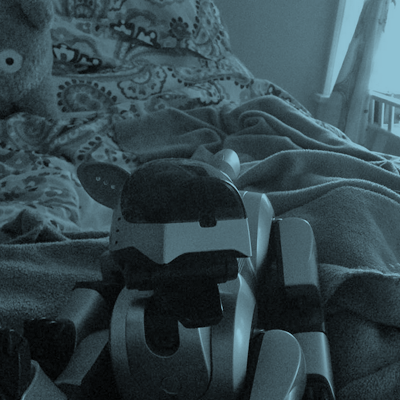

Welcome to AIBO Cafe.
I'm linuxed/nix/aptitude/Elizabeth. Welcome to my webpage! It may not look like much, but I built it to be extremely easy on resources for you and extremely easy to edit for me.
This website is my 'home on the web'- while we've basically abandoned the practice of making our own webpages to represent ourselves on the net for social media accounts, I wanted to take a little bit of that raw creativity and give it my own spin.

Here you will find ramblings about life, robots, vpets, pictures of my lizard, and whatever else I feel like making. All of this can be navigated to by using the navbar right above this needlessly long block of text.
My most substantial content at the moment can be found in the robotics category. I have been spending lots of time working with electronics, AIBOs, PLEOs, hacking my sister's furbies, and other interesting things. I'd suggest checking that out first.
Enjoy your stay. Restrooms are to the left. Complementary robot pictures to the right.